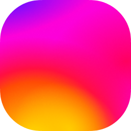

Espacio colaborativo de entrega, consulta interactiva y lectura de actividades académicas • Grupos A y B
Comienza creando tu primera actividad con un archivo PDF para visualizarlo aquí.
Registra la actividad y sube el archivo PDF o enlace de Google Drive

Arrastra y suelta tu archivo PDF aquí o haz clic para examinar